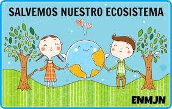

El planeta necesita nuestra ayuda
La organizacion "Programa para el Medio Ambiente" ‘ONU’,El Programa de las Naciones Unidas para el Medio Ambiente es la autoridad ambiental líder en el mundo. Establece la agenda ambiental a nivel global, promueve la implementación coherente de la dimensión ambiental del desarrollo sostenible en el sistema de las Naciones Unidas y actúa como un defensor autorizado del medio ambiente.
